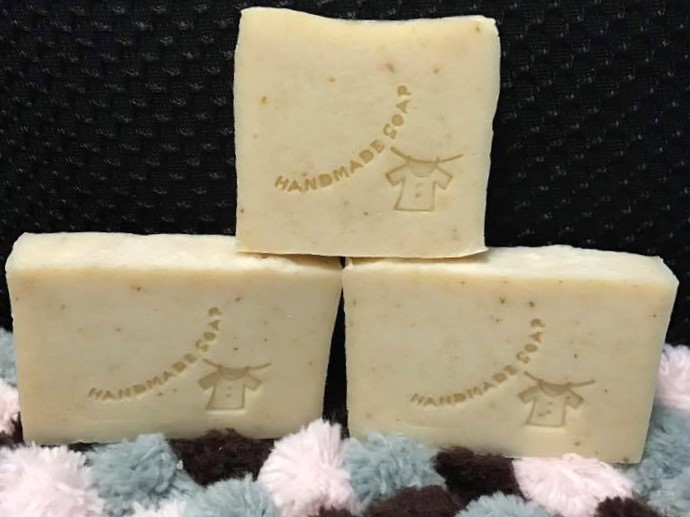

<html>

<head>

<title>平安皂</title>

</head>

<body background="204.jpg" text="#000000">

 
<br>

<th><font size="5"首頁><a href="index.html">首頁</a></th></font>&nbsp&nbsp&nbsp&nbsp&nbsp&nbsp
 

<th><font size="5"平安皂><a href="3rd.html">馬鈴薯家事皂 </a></th></font>&nbsp&nbsp&nbsp&nbsp&nbsp&nbsp
  

<th><font size="5"心得感想><a href="for.html">心得感想 </a></th></font>&nbsp


<br>

<center>

<font face="微軟正黑體" p align="center"><h1><font color="#c10066">平安皂</h1></font></font>

</center>
 
                        

<br>

<br>                                                                                                                    
 
 <font face="標楷體"><font size="5"><font color="#bb5500">                                                  
 
除了艾草粉外也加入了平安粉，<br>
 
平安粉是由:抹草、艾草、香茅、芙蓉四種組合而成<br>
 

   
</font></font></font>


</body>


</html>